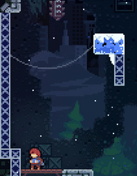
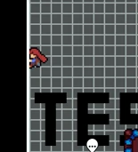
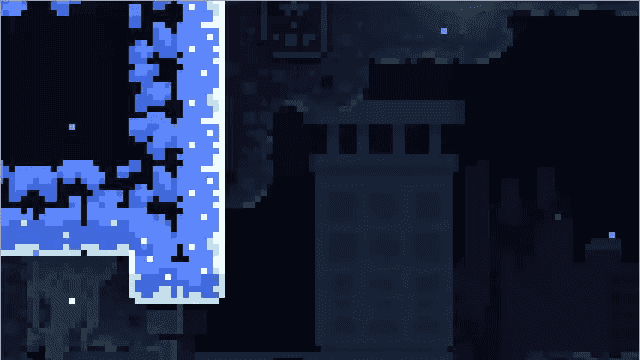
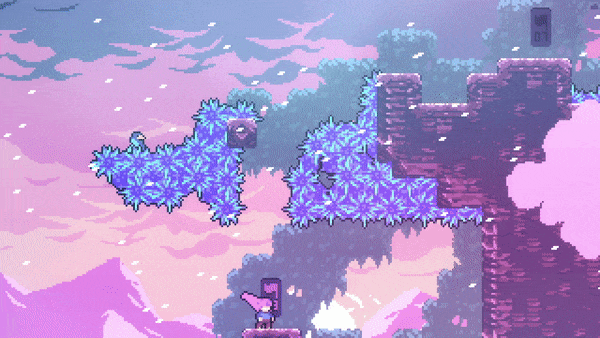
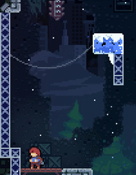
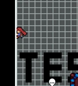
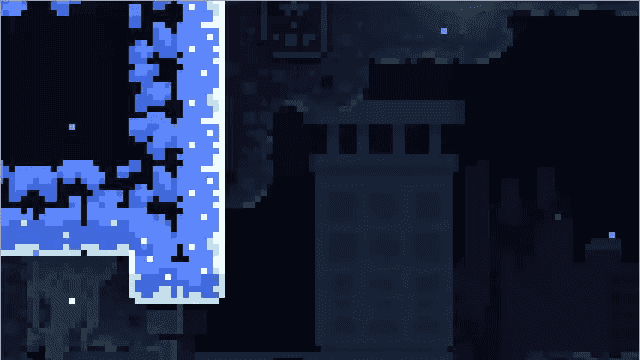
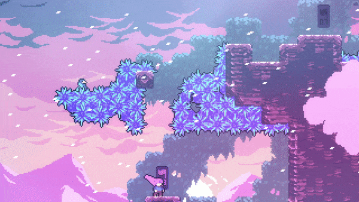

Formulário Madeline

Escalada e Resistência
Madeline possui uma incrível habilidade de escalar terrenos íngremes e perigosos. Sua resistência física é fundamental para lidar com as longas distâncias e os obstáculos traiçoeiros da montanha.
Dash (Impulso Básico)
Madeline pode realizar um impulso rápido em uma direção escolhida, o que permite atravessar grandes distâncias no ar. Essencial para superar barreiras, alcançar plataformas distantes e evitar obstáculos.
Dash em Superfícies (Wall Bounce)
Ao realizar um dash em direção a uma parede, Madeline ricocheteia de volta, alterando sua trajetória. Isso lhe permite acessar áreas de difícil alcance e é uma habilidade essencial para navegar em espaços com paredes próximas.
Pulos Rápidos nas paredes (neutral)
Após saltar em uma parede, Madeline usa uma sequencia rápida de movimentos para não perder energia em uma escalada.
Dash de Energia (Energy Dash)
Em certas áreas, Madeline encontra fontes de energia que recarregam seu dash, permitindo realizar dashes consecutivos sem precisar tocar o chão. Isso é necessário para enfrentar desafios que exigem precisão e rapidez em uma sequência de movimentos.
Dash Duplo (Double Dash)
Em algumas situações, Madeline pode realizar dois dashes seguidos, o que aumenta sua mobilidade significativamente. Isso permite atravessar grandes distâncias e realizar manobras mais complexas no ar, sendo fundamental para áreas com múltiplos obstáculos e plataformas móveis.

 






